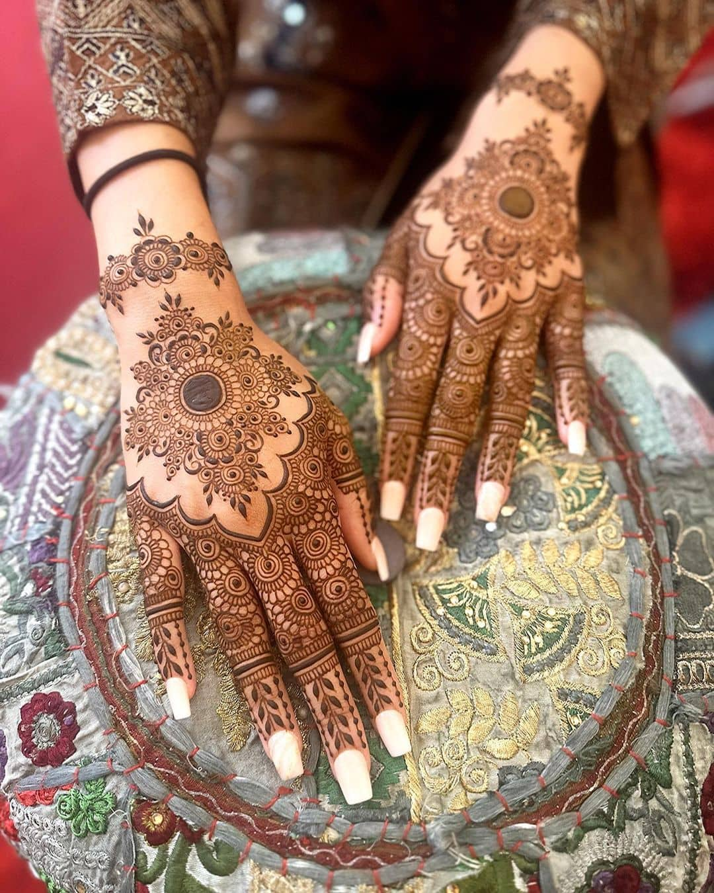
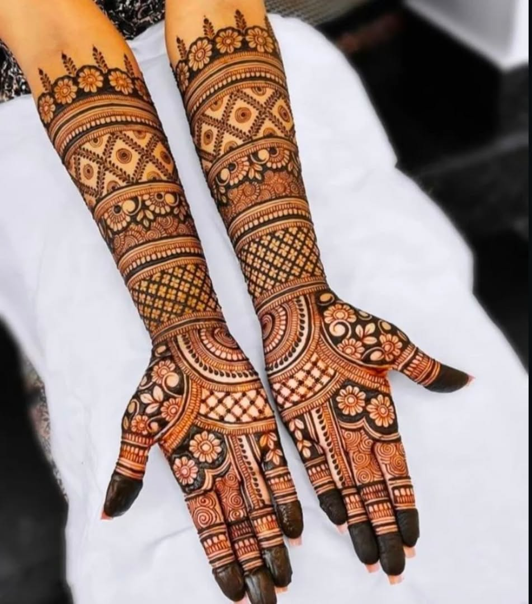

মেহেদি কী?
মেহেদি একটি প্রাকৃতিক উদ্ভিদ, যার পাতার গুঁড়া দিয়ে হাত, পা ও চুল রাঙানো হয়। এটি বিভিন্ন উৎসব, বিয়ে ও বিভিন্ন অনুষ্ঠানে সৌন্দর্য বৃদ্ধির জন্য ব্যবহার করা হয়।
মেহেদির উপকারিতা
🌿
প্রাকৃতিক রং
মেহেদি একটি প্রাকৃতিক রং হিসেবে ব্যবহার করা হয়।
✨
সৌন্দর্য বৃদ্ধি
হাত ও পায়ের সৌন্দর্য বাড়াতে সাহায্য করে।
💆
চুলের যত্ন
চুলে প্রাকৃতিক রং ও উজ্জ্বলতা আনতে সাহায্য করে।
মেহেদির সৌন্দর্য

সুন্দর মেহেদি ডিজাইন

প্রাকৃতিক মেহেদি পাতা
মেহেদির পেস্ট
মেহেদির ব্যবহার
মেহেদির পেস্ট হাতে বা পায়ে নকশা আঁকার জন্য ব্যবহার করা হয়। শুকিয়ে গেলে ধুয়ে ফেললে কমলা-বাদামি থেকে গাঢ় লালচে রং দেখা যায়।